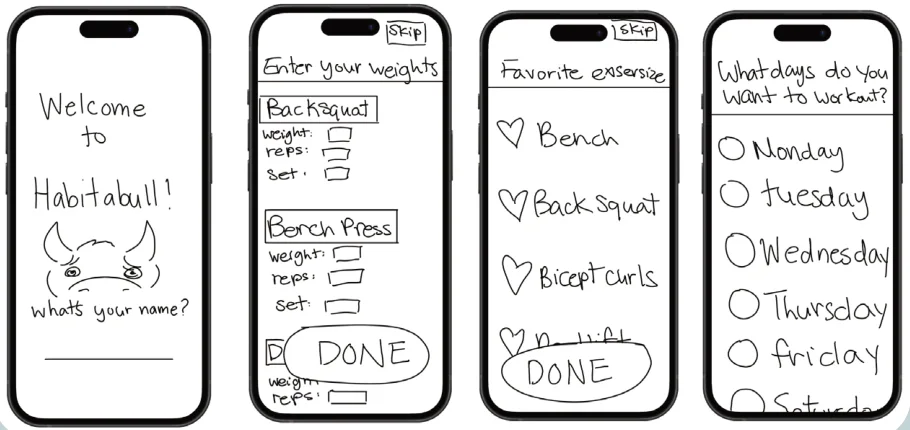
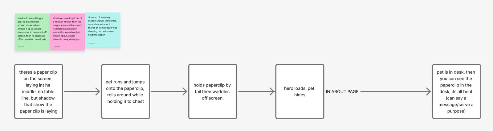
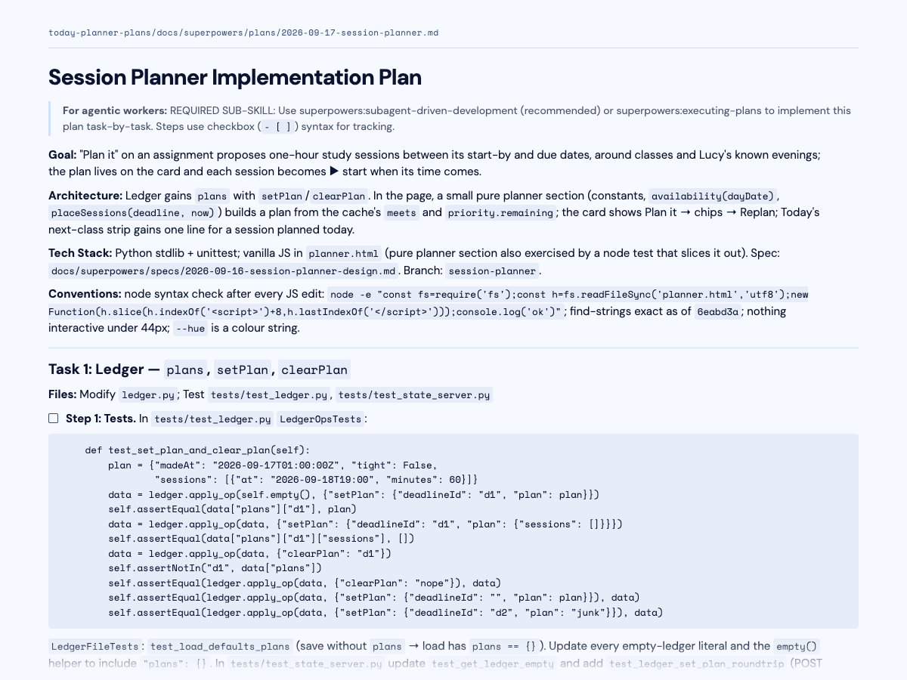
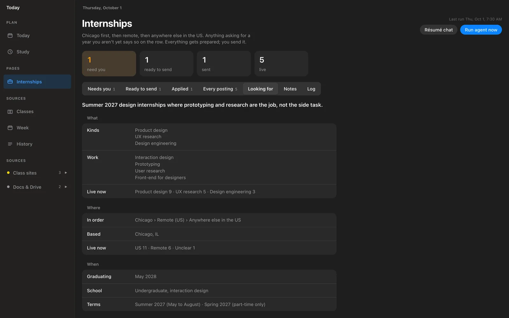
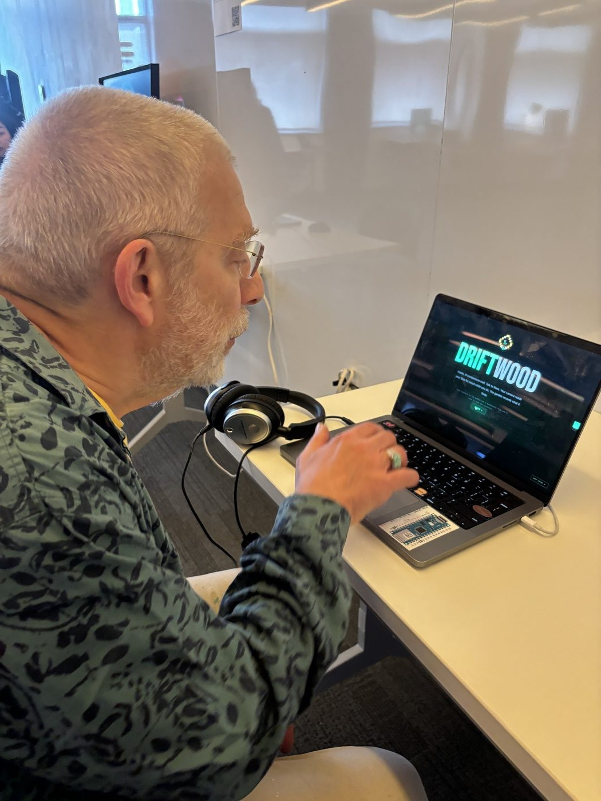
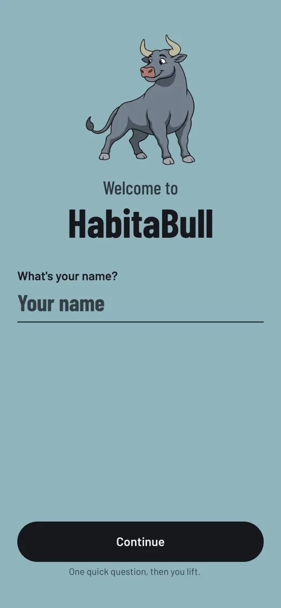
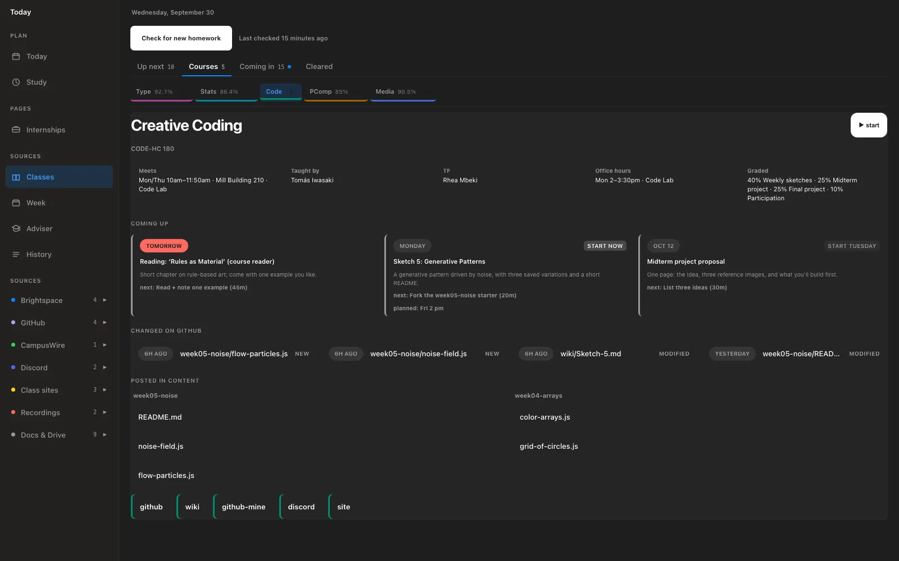
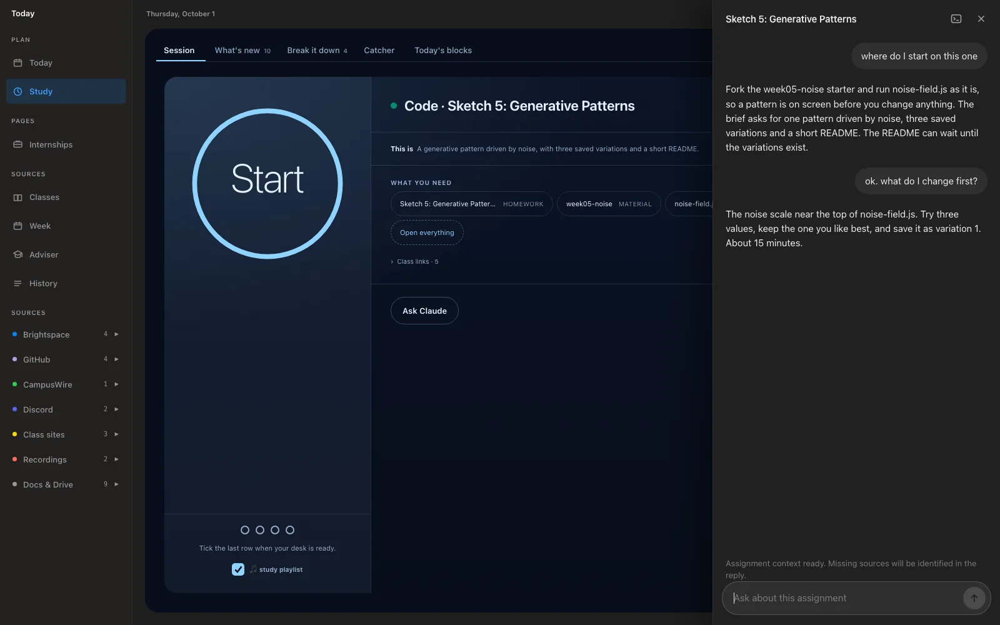

01 · Today / context
Keep help tied to the assignment.
A second model’s review caught a missing assignment link. I required the brief, materials, and source to stay together, with the helper limited to that assignment.
Explore the study sessionHow I work, in four steps.



Sketch flows in Figma, then write a brief with clear tasks and tests.
Hand-drawn flows, a FigJam flow and a build plan .

Set clear limits. The agent fills forms, checks facts and stops before submitting.
I keep the final say: I approve what goes out and make the final design decisions.

Test the code. Get a second review. Try it with people.
186 agent tests · 6 HabitaBull interviews. Agent suite run 9 October 2026.

Put it in people’s hands. HabitaBull works offline; Driftwood runs in the browser and at shows.
Offline app, web game, installable app, show kiosk and itch.io download.
My decisions
01 · Today / context
A second model’s review caught a missing assignment link. I required the brief, materials, and source to stay together, with the helper limited to that assignment.
Explore the study session02 · Internship agent / control
The agent can tailor my résumé and fill a form. It must ask about missing facts and stop before submitting, so I can review what goes out.
Inspect the plugin03 · HabitaBull / voice
HabitaBull welcomes people back after time away. The bull’s voice has rules in the code: notice the absence without punishing it.
Read the design storyBuilt with Claude Code, reviewed with Codex, designed in Figma.
Evidence from the projects
Observed at the Spring Show in May 2026. Most players were ITP/IMA peers, a self-selected audience already familiar with AI critiques. Structured testing of the rebuilt game with non-technical players is still next.
6 research interviews
The design began with six interviews: people who used, had quit, or had never tried fitness apps. I am now building it as a native iPhone app.
Read the research186 automated tests passing
Checks include asking for missing facts and blocking readiness when required answers are blank. Tests use a fictional student and temporary files.
Inspect the testsTest suites run on 9 October 2026. These check software behavior; they do not measure user outcomes.
Featured build · Today
A planner I designed for my own day. It brings class assignments, my inbox, and Google Calendar into one place.

Assignments come from Brightspace, spreadsheets, websites, and Discord. Today gathers them every two hours and keeps each source attached.

I drag an assignment into a free hour. Today adds the study block to my Google Calendar, beside the events already there.

The study helper opens with the assignment brief and materials. It can access that assignment only, keeping the rest of my planner private.
Private app · Screenshots use an invented student.
Read the build plansInternship agent · Design + code
Finds roles, tailors my résumé from existing sentences, and fills the form. I review every application before sending.
It stops before submit. Missing facts come back to me; résumé tailoring can only select and reorder my own sentences.
186 automated tests using a fictional student, checked 9 October 2026.
Explore the codeThis site · Design + code
I direct the design, test it with people and build it with AI. The creature who lives in it has his own process.

Plain HTML and React, precompiled and deployed with one script. User testing cut the home page down, a design audit cut 126 styles to 50, and 44 test files with more than 580 checks run before each release.
I used a Blender rig as a guide so AI drawings did not invent extra blades or wrong limbs, but I did not ship Blender renders. The animations are 2D pixel frames.